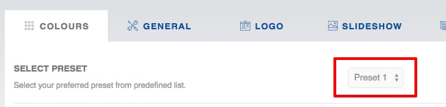
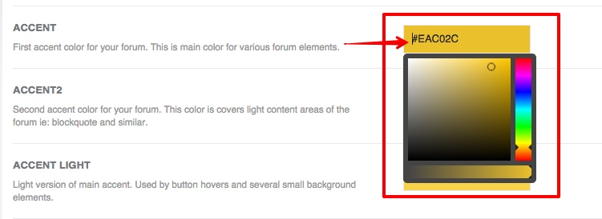
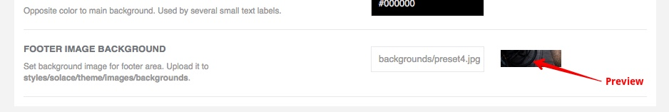
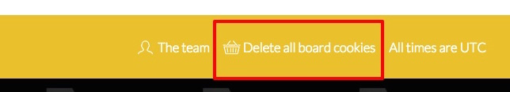

In this section you can configure board colors, presets and backgrounds.

Presets are sets of predefined colors and settings which you can load and customize. Just pick preferred preset and hit Submit button at the bottom of the page.

By using ColorPicker you can choose desired color for your forum part. ColorPicker is activated by clicking on a text field.
In FOOTER IMAGE BACKGROUND field you can specify custom background for footer section of the forum. In text field, please specify filename of background image. If everything is fine, you will see preview in the side box.

Image must be uploaded to:
solace/theme/images/
Very Important ! After saving your settings in Devlom Configurator, you might need to delete board cookies in the forum to see applied changes. To do that, open your forum and press Delete all board cookies link in the bottom navbar. 